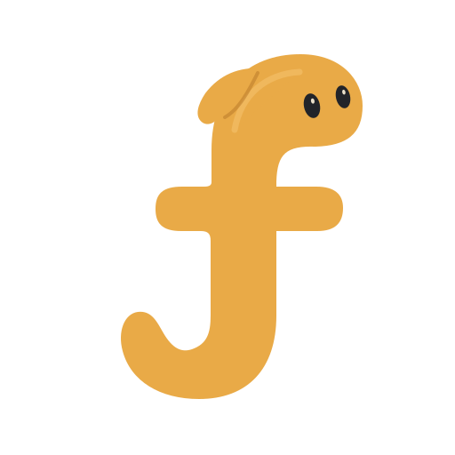
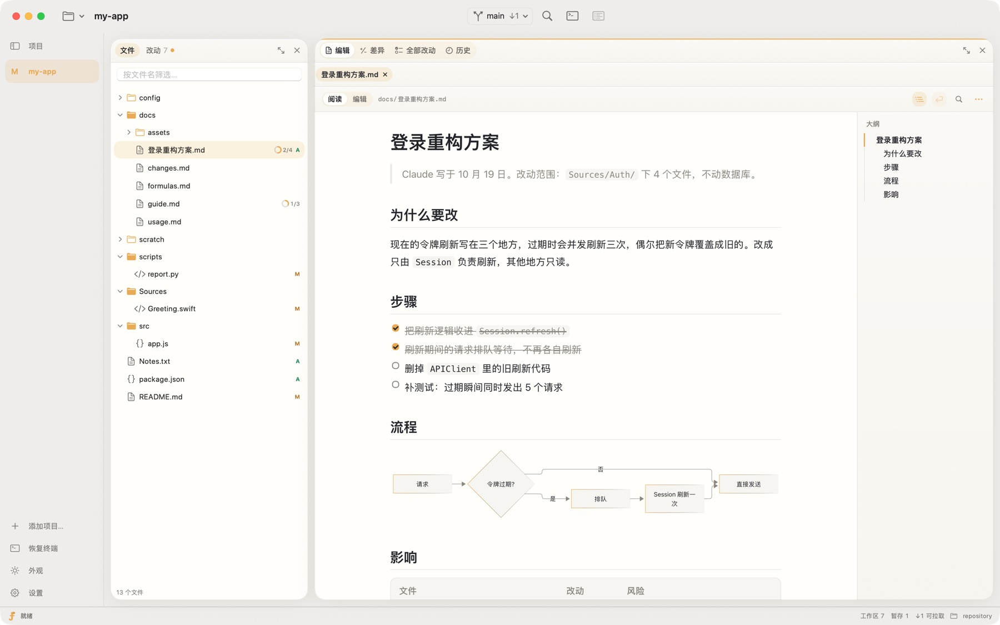

一轮对话，二十个文件。Folmi 把 AI 改的代码和文档摊开给你：先看要紧的，看不懂的让它说人话，一处一处决定留不留。⏎ 收下，⌫ 丢弃，后悔了随时退回。


AI 一分钟改完的东西，人要看半小时。于是要么一行行看到累，要么闭着眼全收，直到某天发现它顺手删了你没注意的东西。
改了几十个文件，从哪看起？
要紧的排在前面。依赖、构建脚本、配置、大段删除先给你看，旁边写着为什么值得先看。
看不懂它为什么这么改。
当场问。选中一段，让它说人话、解释这处改动，回答就出现在改动旁边，不用切走。
收完才发现不对。
每一步都退得回。收下、丢弃都能撤销；AI 的一整轮改动，也能整批退回去。
Folmi 不拦着 AI，也不给它加审批。它写完一轮，你看一轮；没看完的就留着，下次接着看。
Claude Code、Codex 在终端里改完，Folmi 马上就看到；窗口在后台时发通知。
让 AI 解释这处改动，或者写一句意见，直接送回给它去改。
收下的就是这次要交的。说明在你看的时候已经写好，一键提交、推送。
这是 AI 刚做的三处改动。点按钮，或者直接按键盘。
方案、计划、说明，AI 写的 Markdown 越来越多。Folmi 默认把它排好版给你读；要改几处，切到编辑，有一套顺手的编辑辅助。
docs/登录重构方案.md
Claude 写于 10 月 19 日。改动范围：Sources/Auth/ 下 4 个文件。
| 文件 | 改动 | 风险 |
|---|---|---|
| Session.swift | +42 −8 | 中 |
| Token.swift APIClient.swift | +6 −31 | 低 |
退避时间 tn = min(2n·100 ms, 5 s)
assets/ 并插好链接。[[ 补全到其他笔记的链接，任务框直接点选。AI 每说完一轮话，改动单独成一批：能整批退回，也能只看它这一轮改了什么。危险命令在执行前就拦下。支持 Claude Code 和 Codex。
第 12 轮 · 5 处rm -rf build/*看到哪里记到哪里，像邮件的已读。AI 再改一轮，只有它新动过的那几处会重新出现。
AI 改了一个函数，改动上方就写出它被几处调用；删掉或改了名，旧名字还有谁在用；参数改了，哪几处调用没跟着改。按 ⌃⌥H 看一个函数谁调用它、它又调用了谁，能顺着 import 别名、路径别名、再导出找过去。支持 JS、TS 和 Python。
loadInvoice 被 3 处调用getOrder 改名为 loadOrder，旧名字还有 2 处在调用参数 (id) → (id, currency)，2 处没跟着改上下游 · 关系图在改动上写一句「这里别这么做」，一键送回给 agent 去改，带着文件和行号，不用复制粘贴。
Claude Code、Codex 在内嵌终端里跑，可以开多个标签。⌘ 点按输出里的 路径:行号，直接跳到那个文件。
原生 macOS 应用，不用 Electron。打开就是上次的样子，十万行的改动也顺着滚。变慢的改动不合入。
按 ⌘⇧T 打开待办页：所有项目随手记里的 - [ ] 按过期、今天、这周分组，旁边是月历。日期照 Obsidian Tasks 的写法写在那一行里，比如 📅 2026-10-30。
在任何 App 里按 ⌃⌥F11，弹出一个小编辑框，写完按 Esc 就收起，边写边保存。每条想法是项目里 ideas/ 下的一个 Markdown 文件，攒够了直接交给 AI 去做。多人项目可以勾「只留在本机」，不会提交给同事。
任何 App 里都能按ideas/20261022-1530.md你每一次收下、丢弃，和顺手写下的原因，Folmi 都记着，用来让下一轮 AI 写得更合你的意。
这两个接得最深：每一轮改动单独成批，能整批退回、能按轮次看；评论直接发回给它；规则写进它会读的 CLAUDE.md / AGENTS.md。
Cursor、Gemini CLI、Aider 等其他 AI 改的文件，也能在 Folmi 里看、收下、丢弃。
Cursor 和 VS Code 是用来写代码的编辑器；Folmi 是用来看 AI 改了什么、决定留不留的。三者可以一起开，不用二选一。
| Folmi | Cursor | VS Code | |
|---|---|---|---|
| 它是什么 | 看改动、收改动的 macOS 原生应用 | 带 AI 的代码编辑器，基于 VS Code | 通用代码编辑器，靠扩展接 AI |
| 谁来写代码 | 终端里的 Claude Code、Codex，或任何别的 AI | 主要是 Cursor 自带的 agent | Copilot 或其他扩展 |
| 看 AI 的改动 | 一处一处过，空格 / ⏎ / ⌫ 全用键盘；依赖、配置、大段删除排在前面，并写明原因 | 在编辑器里逐块接受或拒绝自带 agent 的改动 | 在差异编辑器里保留或撤销 Copilot 的改动 |
| 改动牵连到哪 | 写在改动上方：改了的函数被几处调用、改名后旧名字还有谁在用、参数改了调用方有没有跟着改 | 用「查找所有引用」一个个查 | |
| 终端里 Claude Code / Codex 改的文件 | 按轮次接入：整批退回、按轮次看、拦危险命令 | 当作普通文件改动，在源代码管理面板里看 | |
| 反馈给 AI | 评论带文件和行号一键发回终端；反复丢弃的改动归纳成规则写进 CLAUDE.md / AGENTS.md | 在自带的对话里说 | 在 Copilot 对话里说 |
| AI 写的 Markdown | 默认阅读视图：公式、Mermaid、渲染后的差异、大纲、文档历史 | Markdown 预览；公式和 Mermaid 通常要装扩展 | |
| 写代码本身 | 能改，但不做 LSP、格式化器、插件 | 完整的编辑、补全、调试、插件生态 | |
| 技术和体积 | Swift 原生，DMG 约 9 MB | Electron，安装包上百 MB | |
如果你主要在终端里用 Claude Code 或 Codex，Folmi 补上的是「看」这一步；写代码时还是用你顺手的编辑器。
不用再开别的 Git 客户端。Folmi 底下就是 Git：你在终端里敲 git 命令，Folmi 里看到的是同一份状态。
写代码交给你喜欢的 AI。Folmi 只管一件事：让你看明白它写了什么。
AI 照常写，不用等你点头。你看你的，没看完的一直留着。
没有插件市场、没有一堆面板。能改，但它首先是用来看的。
📅 2026-10-30 截止、⏳ 2026-10-28 哪天做、✅ 完成日期；在编辑器里输入 / 选「截止日期」或「哪天做」插入今天的日期。也认 - [/] 进行中和 - [-] 不做了。日期就写在那一行里，Folmi 不另存。在待办页勾选随手记里的待办会顺便写上完成日期；其他文件只在已经在用 ✅ 时才写。阅读视图里，进行中的复选框画成半满，不做了的划掉，日期显示成小标签。import { a as b }、import * as、barrel 文件的再导出、require、tsconfig 和 vite 的路径别名（如 @/）、const h = foo、Python 的 import … as / from … import … as，以及 this.svc.load()、self.repo.find() 这类能看出类型的成员调用。只按方法名对上的标「可能」。在后台读，不改项目里的文件。...args、*args 展开传参的看不出，单独写出来。构造函数改了参数，会检查 new Order(…)、Order(…) 这些创建它的地方。ideas/ 文件夹里的一个 .md 文件；5 分钟内再按会回到刚才那条接着写，什么都没写不会留下空文件。顶部可以换项目，这条会跟着搬过去。ideas/ 写进这个仓库的 .git/info/exclude，Git 看不到这些文件，也不会改团队共享的 .gitignore，适合多人项目。<picture>、<details>、<kbd> 等。git add 进暂存区、没经过你验收的改动会标出来，排在逐个验收最前，提交前提醒一次。撤回、挑选提交的结果改为放进工作区，先验收再提交。.gitignore。以上操作都能用 ⌥⌘Z 撤销。
第一个公开版本。
主要配合 Claude Code 和 Codex：每一轮改动单独成批、整批退回、按轮次看、评论发回、规则写进 CLAUDE.md / AGENTS.md。其他 AI，或者你自己改的文件，也都能看、收下、丢弃，只是没有按轮次接入。
能。Folmi 底下用 Git 记录每一处改动，但你只需要看、收下、丢弃。收下的就是下一次要提交的内容，提交说明也替你写好了。项目需要先用 Git 管理起来，第一次打开时 Folmi 会检查。
Folmi 自己不上传任何东西。只有你用到解释、说人话、写提交说明这些 AI 功能时，相关内容才会发给你配置的模型，或者本机的 claude；发送前会先检查里面有没有密钥。
能。每一步收下、丢弃都记着，⌥⌘Z 撤回。AI 的一整轮改动也能整批退回。
内测版已使用 Developer ID 签名，尚未完成 Apple 公证。确认下载来源可信且 SHA256 校验一致后，先尝试打开 DMG 或已安装的 Folmi；若被阻止，进入「系统设置 → 隐私与安全」，找到对应提示并选择「仍要打开」。具体步骤见安装说明。